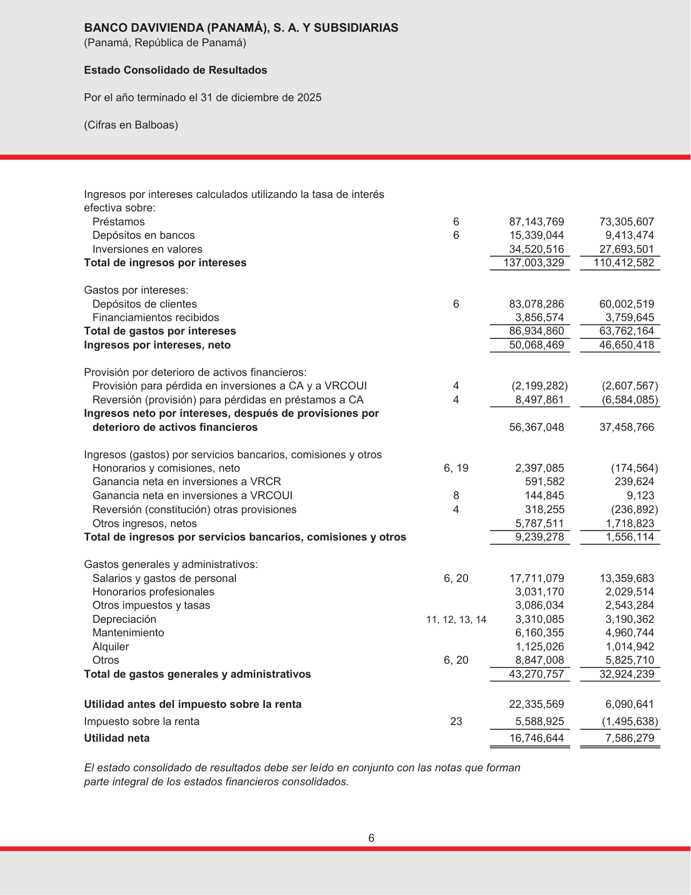
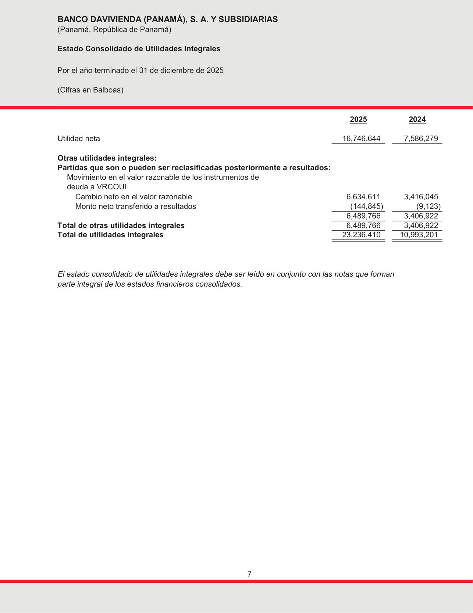
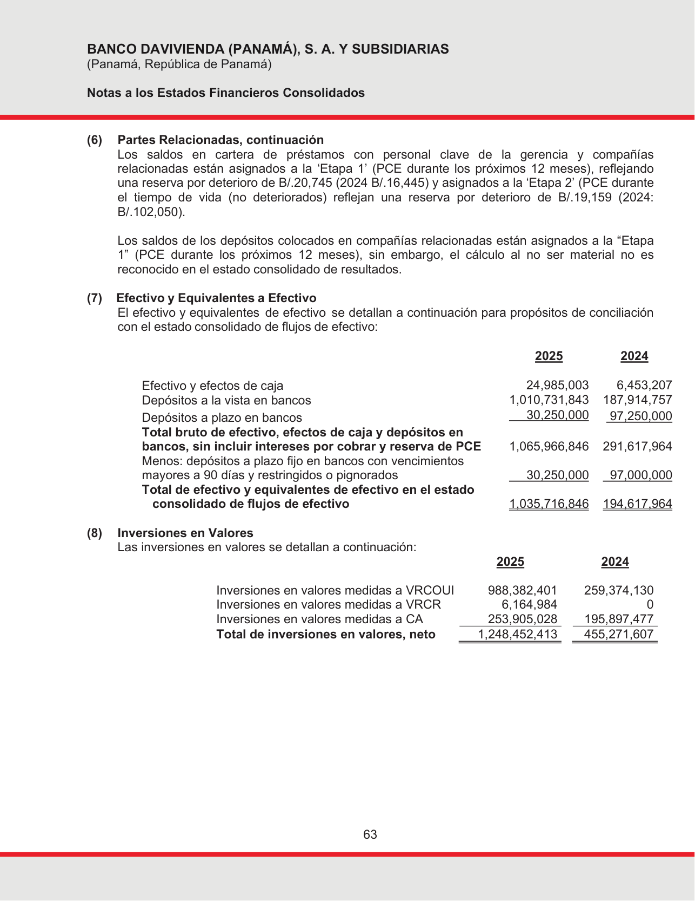
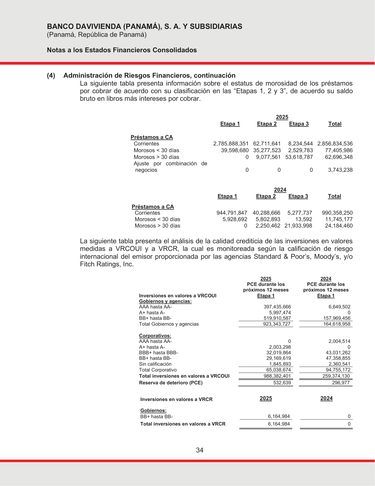
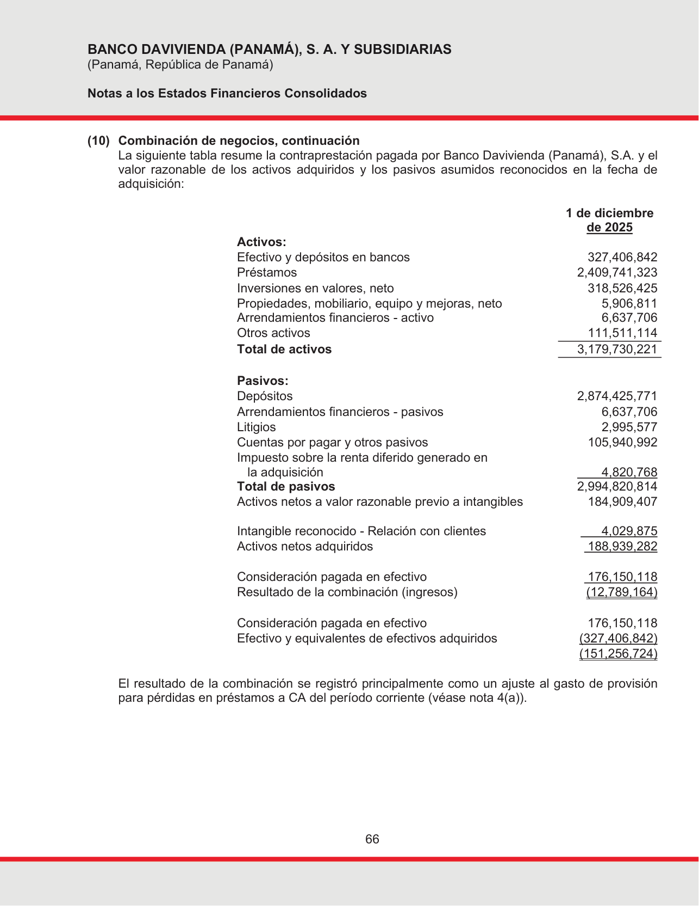

<title>Davivienda — Renglones con ganancias del portafolio de inversiones</title>
<meta name="viewport" content="width=device-width, initial-scale=1">
<style>
<style>
:root{
  --plane:#eef1f5; --surface:#f8f9fb; --surface-2:#ffffff;
  --ink:#0f1620; --ink-2:#475062; --muted:#8a91a0; --hair:#dde2ea; --hair-2:#c7cedb;
  --accent:#2a78d6; --accent-soft:#e7f0fc;
  --s1:#2a78d6; --s2:#1baf7a; --s3:#c98a00; --s6:#e34948;
  --good:#0a8a3a; --warn:#b8770a; --crit:#c0392b;
  --good-bg:#e4f4ea; --warn-bg:#fbf1dc; --crit-bg:#fae5e2; --info-bg:#e7f0fc;
  --shadow:0 1px 2px rgba(15,22,32,.04),0 8px 24px rgba(15,22,32,.06);
  --mono:ui-monospace,"SF Mono","SFMono-Regular",Menlo,Consolas,monospace;
  --sans:system-ui,-apple-system,"Segoe UI",Roboto,sans-serif;
}
@media (prefers-color-scheme:dark){
  :root{
    --plane:#0a0c10; --surface:#12161d; --surface-2:#171c25;
    --ink:#f2f5fa; --ink-2:#a8b0c0; --muted:#6b7382; --hair:#242a34; --hair-2:#2f3744;
    --accent:#4a90e2; --accent-soft:#16273c;
    --s1:#3987e5; --s2:#199e70; --s3:#c98500; --s6:#e66767;
    --good:#3bbf6a; --warn:#e0a52c; --crit:#e8756a;
    --good-bg:#12291b; --warn-bg:#2a2210; --crit-bg:#2c1815; --info-bg:#16273c;
    --shadow:0 1px 2px rgba(0,0,0,.3),0 10px 30px rgba(0,0,0,.4);
  }
}
:root[data-theme="dark"]{
  --plane:#0a0c10; --surface:#12161d; --surface-2:#171c25;
  --ink:#f2f5fa; --ink-2:#a8b0c0; --muted:#6b7382; --hair:#242a34; --hair-2:#2f3744;
  --accent:#4a90e2; --accent-soft:#16273c;
  --s1:#3987e5; --s2:#199e70; --s3:#c98500; --s6:#e66767;
  --good:#3bbf6a; --warn:#e0a52c; --crit:#e8756a;
  --good-bg:#12291b; --warn-bg:#2a2210; --crit-bg:#2c1815; --info-bg:#16273c;
}
:root[data-theme="light"]{
  --plane:#eef1f5; --surface:#f8f9fb; --surface-2:#ffffff;
  --ink:#0f1620; --ink-2:#475062; --muted:#8a91a0; --hair:#dde2ea; --hair-2:#c7cedb;
  --accent:#2a78d6; --accent-soft:#e7f0fc;
  --s1:#2a78d6; --s2:#1baf7a; --s3:#c98a00; --s6:#e34948;
  --good:#0a8a3a; --warn:#b8770a; --crit:#c0392b;
  --good-bg:#e4f4ea; --warn-bg:#fbf1dc; --crit-bg:#fae5e2; --info-bg:#e7f0fc;
}
*{box-sizing:border-box}
html{scroll-behavior:smooth}
body{margin:0;background:var(--plane);color:var(--ink);font-family:var(--sans);
  font-size:16px;line-height:1.58;-webkit-font-smoothing:antialiased}
.wrap{max-width:1000px;margin:0 auto;padding:0 24px}
h1,h2,h3{text-wrap:balance;line-height:1.18;margin:0}
.mono{font-family:var(--mono)}
a{color:var(--accent)}

header.top{position:sticky;top:0;z-index:40;background:color-mix(in srgb,var(--plane) 90%,transparent);
  backdrop-filter:blur(10px);border-bottom:1px solid var(--hair)}
.top-in{display:flex;align-items:center;gap:14px;height:56px;max-width:1000px;margin:0 auto;padding:0 24px}
.brandmark{display:flex;align-items:center;gap:10px;font-weight:680;letter-spacing:-.01em;font-size:15px}
.brandmark .dot{width:9px;height:9px;border-radius:50%;background:var(--accent);box-shadow:0 0 0 4px var(--accent-soft)}
.top-spacer{flex:1}
.top-in a{font-size:13px;color:var(--ink-2);text-decoration:none}
.top-in a:hover{color:var(--accent)}

.hero{padding:44px 0 26px;border-bottom:1px solid var(--hair)}
.eyebrow{font-family:var(--mono);font-size:12px;letter-spacing:.08em;text-transform:uppercase;color:var(--accent);font-weight:600}
h1{font-size:33px;font-weight:720;letter-spacing:-.02em;margin:12px 0 10px}
.lede{font-size:17px;color:var(--ink-2);max-width:74ch}
.meta-row{display:flex;flex-wrap:wrap;gap:8px;margin-top:18px}
.pill{font-size:12.5px;background:var(--surface-2);border:1px solid var(--hair);border-radius:999px;padding:4px 12px;color:var(--ink-2)}
.pill b{color:var(--ink)}

section{padding:34px 0;border-bottom:1px solid var(--hair)}
.sec-head{display:flex;align-items:baseline;gap:12px;margin-bottom:14px}
.sec-num{font-family:var(--mono);font-size:12px;color:var(--muted);font-weight:600}
h2{font-size:23px;font-weight:680;letter-spacing:-.01em}
h3{font-size:15.5px;font-weight:640;margin:20px 0 7px}
p{margin:0 0 12px}
.sub{color:var(--ink-2)}

.tbl-scroll{overflow-x:auto;margin:14px 0;border:1px solid var(--hair);border-radius:12px}
table{border-collapse:collapse;width:100%;font-size:14px;background:var(--surface-2);min-width:640px}
th,td{text-align:left;padding:9px 13px;border-bottom:1px solid var(--hair);vertical-align:top}
thead th{background:var(--surface);font-weight:640;font-size:12px;color:var(--ink-2);
  text-transform:uppercase;letter-spacing:.03em}
tbody tr:last-child td{border-bottom:none}
.num{text-align:right;font-variant-numeric:tabular-nums;font-family:var(--mono);font-size:13px;white-space:nowrap}
.tot td{font-weight:700;background:color-mix(in srgb,var(--accent-soft) 55%,transparent)}
.sub-row td{background:color-mix(in srgb,var(--surface) 60%,transparent);font-size:13px}
.sub-row td:first-child{padding-left:26px;color:var(--ink-2)}
.neg{color:var(--crit)}
.mini{font-size:12px;color:var(--muted)}

.badge{display:inline-block;font-size:11px;font-weight:640;padding:1px 8px;border-radius:6px;font-family:var(--mono);letter-spacing:.02em;white-space:nowrap}
.b-pl{background:var(--accent-soft);color:var(--accent)}
.b-oci{background:var(--warn-bg);color:var(--warn)}
.b-prov{background:var(--crit-bg);color:var(--crit)}
.b-yes{background:var(--good-bg);color:var(--good)}
.b-no{background:var(--crit-bg);color:var(--crit)}

.callout{display:flex;gap:13px;padding:15px 17px;border-radius:12px;margin:16px 0;font-size:14.5px;line-height:1.5}
.callout .ic{flex:0 0 24px;width:24px;height:24px;border-radius:50%;display:grid;place-items:center;font-weight:700;font-size:14px;color:#fff}
.co-key{background:var(--crit-bg)} .co-key .ic{background:var(--crit)}
.co-info{background:var(--info-bg)} .co-info .ic{background:var(--accent)}
.co-good{background:var(--good-bg)} .co-good .ic{background:var(--good)}

.map{display:grid;grid-template-columns:repeat(auto-fit,minmax(220px,1fr));gap:14px;margin:18px 0}
.mapc{background:var(--surface-2);border:1px solid var(--hair);border-radius:14px;padding:15px 17px;box-shadow:var(--shadow)}
.mapc .t{font-size:12px;color:var(--muted);text-transform:uppercase;letter-spacing:.04em;font-weight:600;margin-bottom:8px}
.mapc ul{margin:0;padding-left:16px;font-size:13.5px;color:var(--ink-2)}
.mapc li{margin:4px 0}
.mapc li b{color:var(--ink)}
.mapc .amt{font-family:var(--mono);font-size:12.5px}

.ev-grid{display:grid;grid-template-columns:repeat(auto-fill,minmax(170px,1fr));gap:12px;margin-top:12px}
.ev{display:block;background:var(--surface-2);border:1px solid var(--hair);border-radius:10px;overflow:hidden;text-decoration:none;color:inherit;box-shadow:var(--shadow)}
.ev img{width:100%;display:block;aspect-ratio:3/4;object-fit:cover;object-position:top;background:#fff;border-bottom:1px solid var(--hair)}
.ev .cap{padding:8px 10px;font-size:12px;color:var(--ink-2)}
.ev .cap b{display:block;color:var(--ink);font-size:12.5px;margin-bottom:1px}
.ev:hover{border-color:var(--accent)}

.kbd{font-family:var(--mono);font-size:12.5px;background:var(--surface);border:1px solid var(--hair-2);border-radius:5px;padding:1px 6px}
footer{padding:30px 0 60px;color:var(--muted);font-size:13px}
@media(max-width:640px){h1{font-size:26px}.hero{padding:32px 0 22px}}
</style>
</style>

<header class="top">
  <div class="top-in">
    <span class="brandmark"><span class="dot"></span>Davivienda · Ganancias de inversiones</span>
    <span class="top-spacer"></span>
    <a href="index.html">← Radar de Inversiones</a>
  </div>
</header>

<main class="wrap">
  <div class="hero">
    <div class="eyebrow">Nota de trabajo · mapa de renglones</div>
    <h1>¿Dónde aparecen las ganancias del portafolio de inversiones?</h1>
    <p class="lede">Rastreo, renglón por renglón, del último estado financiero de Davivienda (EF Local <b>2025, auditado</b> — su primer cierre tras absorber Scotiabank Panamá el 1-dic-2025). Davivienda <b>no publica interinos trimestrales</b>, así que este mapa es del <b>año completo</b>, no de un trimestre. El rasgo distintivo: reporta <b>dos líneas de ganancia de valores separadas y limpias</b> (VRCR y VRCOUI) — ninguna mezclada con divisas o derivados.</p>
    <div class="meta-row">
      <span class="pill">Emisor: <b>Banco Davivienda (Panamá), S.A. y Subsidiarias (consolidado, post-fusión Scotiabank)</b></span>
      <span class="pill">Corte: <b>31-dic-2025</b> (auditado)</span>
      <span class="pill">Período: <b>año completo (FY2025)</b></span>
      <span class="pill">Moneda: <b>USD</b> (B/. a la par)</span>
    </div>
  </div>
  <section id="mapa">
    <div class="sec-head"><span class="sec-num">TL;DR</span><h2>El mapa completo — dos líneas limpias de valores</h2></div>
    <p class="sub">En Davivienda el resultado del portafolio aparece en <b>interés</b>, en <b>dos líneas de ganancia de valores separadas</b> (VRCR y VRCOUI), en el ORI y en una provisión de deterioro. Ninguna línea es mixta — no hay que abrir nada para retirar divisas o derivados. Cifras del año completo (auditado).</p>
    <div class="map">
      <div class="mapc">
        <div class="t">① Estado de Resultados · interés</div>
        <ul>
          <li><b>Inversiones en valores</b> <span class="amt">34,520,516</span> — interés de la cartera (FY2025)</li>
        </ul>
      </div>
      <div class="mapc">
        <div class="t">② Estado de Resultados · valores</div>
        <ul>
          <li><b>Ganancia neta en inversiones a VRCR</b> <span class="amt">591,582</span></li>
          <li><b>Ganancia neta en inversiones a VRCOUI</b> <span class="amt">144,845</span> — realizado, venta de deuda FVOCI</li>
        </ul>
      </div>
      <div class="mapc">
        <div class="t">③ Resultado Integral (ORI)</div>
        <ul>
          <li><b>Cambio neto en el valor razonable</b> <span class="amt">6,634,611</span> — no realizada, deuda VRCOUI</li>
          <li><b>Monto neto transferido a resultados</b> <span class="amt neg">(144,845)</span> — reciclaje</li>
        </ul>
      </div>
      <div class="mapc">
        <div class="t">④ P&amp;L · deterioro (netea)</div>
        <ul>
          <li><b>Provisión para pérdida en inversiones a CA y a VRCOUI</b> <span class="amt neg">(2,199,282)</span> — Nota 4</li>
        </ul>
      </div>
    </div>
    <div class="callout co-good"><span class="ic">✓</span>
      <div><b>Aquí no hay renglón mixto que abrir.</b> Davivienda separa el resultado del portafolio en <b>dos líneas de valores limpias</b>: ganancia a VRCR 591,582 y ganancia a VRCOUI 144,845 (subtotal <b>736,427</b>). Ninguna mezcla divisas ni derivados. Además, el reciclaje encaja de forma perfecta: la ganancia realizada VRCOUI (144,845) en el P&amp;L es exactamente el "monto neto transferido a resultados" (144,845) que sale del ORI — mismo monto, signo opuesto.</div>
    </div>
  </section>
  <section>
    <div class="sec-head"><span class="sec-num">01</span><h2>Estado de Ganancias o Pérdidas (P&amp;L)</h2></div>
    <p class="sub">PDF p.9. Un renglón de <b>interés</b> y <b>dos</b> renglones de ganancia de valores, ambos limpios. Cifras del <b>año completo 2025</b> (comparativo 2024).</p>
    <div class="tbl-scroll"><table>
      <thead><tr><th>Renglón (P&amp;L)</th><th class="num">2025</th><th class="num">2024</th><th>Tipo</th><th>¿Solo portafolio?</th></tr></thead>
      <tbody>
        <tr><td><b>Ingresos por intereses — "Inversiones en valores"</b></td><td class="num">34,520,516</td><td class="num">27,693,501</td><td><span class="badge b-pl">Interés</span></td><td><span class="badge b-yes">Sí — cartera</span></td></tr>
        <tr><td><b>Ganancia neta en inversiones a VRCR</b> <span class="mini">(FVTPL)</span></td><td class="num">591,582</td><td class="num">239,624</td><td><span class="badge b-pl">Valuación/venta</span></td><td><span class="badge b-yes">Sí — valores FVTPL</span></td></tr>
        <tr><td><b>Ganancia neta en inversiones a VRCOUI</b> <span class="mini">(Nota 8, venta FVOCI)</span></td><td class="num">144,845</td><td class="num">9,123</td><td><span class="badge b-pl">Valuación/venta</span></td><td><span class="badge b-yes">Sí — venta FVOCI</span></td></tr>
      </tbody>
    </table></div>
    <p class="mini">La Nota 8 corrobora: en 2025 se vendieron inversiones de deuda VRCOUI por B/.434.9 M generando la ganancia neta de 144,845, y VRCR por B/.60.0 M. Ninguna línea contiene divisas ni derivados.</p>
  </section>
  <section>
    <div class="sec-head"><span class="sec-num">02</span><h2>Estado de Resultado Integral (ORI / patrimonio)</h2></div>
    <p class="sub">PDF p.10 ("Estado Consolidado de Utilidades Integrales"). Ganancia no realizada de la deuda VRCOUI y su reciclaje al vender. Afecta el patrimonio.</p>
    <div class="tbl-scroll"><table>
      <thead><tr><th>Renglón (ORI)</th><th class="num">2025</th><th class="num">2024</th><th>Naturaleza</th></tr></thead>
      <tbody>
        <tr><td><b>Cambio neto en el valor razonable</b> (deuda VRCOUI)</td><td class="num">6,634,611</td><td class="num">3,416,045</td><td><span class="badge b-oci">No realizada · FVOCI deuda</span></td></tr>
        <tr><td><b>Monto neto transferido a resultados</b></td><td class="num neg">(144,845)</td><td class="num neg">(9,123)</td><td><span class="badge b-oci">Reciclaje al P&amp;L</span></td></tr>
        <tr class="tot"><td>Total de otras utilidades integrales</td><td class="num">6,489,766</td><td class="num">3,406,922</td><td></td></tr>
      </tbody>
    </table></div>
    <div class="callout co-info"><span class="ic">i</span>
      <div><b>Reciclaje que cuadra al centavo.</b> La ganancia realizada en venta VRCOUI (144,845) reconocida en el P&amp;L es exactamente el "monto neto transferido a resultados" (144,845) que se retira del ORI. La ganancia <b>no realizada</b> del año (6,634,611) permanece en patrimonio hasta que se venda. El año fue de valuación FVOCI positiva.</div>
    </div>
  </section>
  <section>
    <div class="sec-head"><span class="sec-num">03</span><h2>P&amp;L — deterioro sobre la cartera (netea)</h2></div>
    <p class="sub">PDF p.9. La provisión por deterioro de inversiones (CA + VRCOUI) reduce el resultado. Fue un cargo tanto en 2025 como en 2024.</p>
    <div class="tbl-scroll"><table>
      <thead><tr><th>Renglón</th><th class="num">2025</th><th class="num">2024</th><th>Efecto</th></tr></thead>
      <tbody>
        <tr><td>Provisión para pérdida en inversiones a CA y a VRCOUI <span class="mini">(Nota 4)</span></td><td class="num">2,199,282</td><td class="num">2,607,567</td><td class="mini">cargo ambos años</td></tr>
      </tbody>
    </table></div>
    <p class="mini">La reconciliación de PCE de la Nota 4 incluye un ajuste por la combinación de negocios con Scotiabank (reserva recibida 1,159,300).</p>
  </section>
  <section>
    <div class="sec-head"><span class="sec-num">04</span><h2>Resumen — resultado del portafolio en el período</h2></div>
    <p class="sub">Sumando los renglones del portafolio (todos limpios), el resultado del año 2025:</p>
    <div class="tbl-scroll"><table>
      <thead><tr><th>Concepto (solo portafolio de inversiones)</th><th class="num">2025</th><th>Dónde</th></tr></thead>
      <tbody>
        <tr><td>Interés devengado ("Inversiones en valores")</td><td class="num">34,520,516</td><td class="mini">P&amp;L · interés</td></tr>
        <tr><td>Ganancia neta VRCR + venta VRCOUI</td><td class="num">736,427</td><td class="mini">P&amp;L</td></tr>
        <tr><td>(−) Provisión de deterioro (CA + VRCOUI)</td><td class="num neg">(2,199,282)</td><td class="mini">P&amp;L · Nota 4</td></tr>
        <tr class="tot"><td>= Resultado del portafolio en <b>utilidad neta</b></td><td class="num">33,057,661</td><td class="mini">P&amp;L</td></tr>
        <tr><td>(+) Cambio no realizado FVOCI deuda (a patrimonio)</td><td class="num">6,634,611</td><td class="mini">ORI</td></tr>
        <tr class="tot"><td>= Resultado <b>integral</b> del portafolio (P&amp;L + ORI)*</td><td class="num">39,692,272</td><td class="mini">P&amp;L + ORI</td></tr>
      </tbody>
    </table></div>
    <p class="mini">* Cifras del <b>año completo 2025 auditado</b> (Davivienda no publica interinos trimestrales). El reciclaje (144,845) no se doble-cuenta. FY2025 es el primer cierre post-fusión con Scotiabank.</p>
  </section>
  <section>
    <div class="sec-head"><span class="sec-num">05</span><h2>Evidencia — páginas fuente</h2></div>
    <p class="sub">Capturas de las páginas exactas del 31-dic-2025. Clic para ampliar. Fuente PDF: <a href="https://www.davibank.pa/content/dam/scotiabank/international/panama/Espanol/pdf/Davivienda-EF-Local-FINAL.pdf">EF Local 2025 consolidado (auditado)</a>.</p>
    <div class="ev-grid">
      <a class="ev" href="capturas-fuentes/davivienda-dic2025_p009_estado-resultados-valores.png"><div class="cap"><b>P&amp;L · p.9</b>Interés valores 34.5M · ganancia VRCR 591K + VRCOUI 145K · deterioro (2.2M)</div></a>
      <a class="ev" href="capturas-fuentes/davivienda-dic2025_p010_resultado-integral.png"><div class="cap"><b>ORI · p.10</b>Cambio no realizado 6.63M · transferido (145K)</div></a>
      <a class="ev" href="capturas-fuentes/davivienda-dic2025_p066_nota8-composicion.png"><div class="cap"><b>Nota 8 · p.66</b>Composición VRCOUI/VRCR/CA (1,248M)</div></a>
      <a class="ev" href="capturas-fuentes/davivienda-dic2025_p037_ratings.png"><div class="cap"><b>Nota 4 · p.37</b>Calidad crediticia de la cartera por banda</div></a>
      <a class="ev" href="capturas-fuentes/davivienda-dic2025_p069_combinacion-scotiabank.png"><div class="cap"><b>Nota 10 · p.69</b>Combinación de negocios: inversiones adquiridas de Scotiabank 318.5M</div></a>
    </div>
  </section>
  <section>
    <div class="sec-head"><span class="sec-num">06</span><h2>Conclusión</h2></div>
    <div class="callout co-good"><span class="ic">✓</span>
      <div><b>Renglones identificados — dos líneas limpias.</b> El resultado del portafolio de Davivienda aparece en interés, <b>dos líneas separadas de ganancia de valores</b> (VRCR y VRCOUI), el ORI (valuación + reciclaje que cuadra al centavo) y una provisión de deterioro. Ninguna línea es mixta. Cifras del <b>año 2025 auditado</b> (no hay interino trimestral); primer cierre post-fusión con Scotiabank. Verificado contra el EF Local 2025.</div>
    </div>
    <p class="mini">Preparado para la mesa de tesorería · corte 31-dic-2025. Reporte completo en <a href="index.html">index.html</a> · dataset en <span class="kbd">datos-extraidos.md</span>.</p>
  </section>

</main>
<footer><div class="wrap">Radar de Inversiones — Banca de Panamá · Banistmo como banco base · datos 2024–2026.</div></footer>
<script>
(function(){ try{ var t=localStorage.getItem("theme"); if(t)document.documentElement.setAttribute("data-theme",t); }catch(e){} })();
</script>
